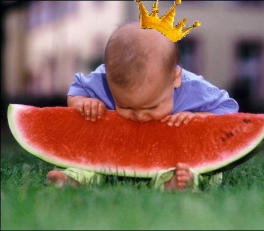

Forums galactiques > Taverne galactique : lieu de discussion informel > Souffle d'Automne
Pages : 1
| Soda Réputation à la taverne : 706  04/06 ETU 20:26 | Score : 11 Détails La galaxie partait en cacahuète.
NRE, CONNOR, Insurgés, Hellfire, Polonga?, Apocalypse......sans cesse la même litanie qui revenait, tournait et remuait les plus vieux conflits galactiques. Le mal de crâne qui se faisait diablement sentir chez Soda était agassant. Il déambulait dans les rues de la Taverne Galactique, là où l'absence de conflit et la pureté de l'air nettoyaient les coeurs. Une délicieuse brise aux arômes d'astro-pastis et de vômi carressait ses narines. Il sourit. Après un bref salut à un ami qui sortait, les yeux injectés de sang, du coffee shop, véritable aqua géant, il aperçut Alyanon qui quittait une taverne délabrée à quatre pattes. Soda s'approcha et le héla. Hey, tu nous fait quoi mec? Chuuut! Y m'ont pas vu, les môôôôôvais! Z'avez pas de quoi payer mon.....quatrième tonneau d'astro pastis, alors z'ai...burps....filé! Mouarf, sans payer! Mouarf Mouarf! T'es beurré? Ba ouais...comme d'habi...burps...tude! ...Pas faux. Dis, je vais annoncer officiellement la création de notre coalition. Tu viendras faire un petit speech quand même? Ouais...heu....ze vais essayer quoi...mais je te promets rien hein?! Pas de souci, c'est l'intention qui compte. Je paye la tournée après, ca devrait te motiver." Soda laissa là Alyanon qui partit sans aucun doute se cacher dans une poubelle le temps que le barman -qui hurlait déjà de rage à l'intérieur- laisse tomber ses recherches. Soda continua son chemin et arriva à destination, la place centrale, là où tout le monde passait, là où tout le monde verrait. Il grimpa sur un lampadaire, sortit un porte voix et entreprit de s'approprier l'attention générale. S'il vous plait, s'il vous plait! Messieurs, mesdames, commandants, commandantes. Laissez moi me présenter. Soda, conseiller scientifique, ou pas, enfin on sais plus trop maintenant. Mais bon, c'est pas l'important ici. Si je suis ici, à passer pour un con sur mon lampadaire, c'est parceque j'ai trouvé que c'était l'endroit le plus idéal pour venir annoncer la création de ma coalition. En fait, ca fait un bout de temps qu'elle est créée, mais là ce devient officielle. J'annonce donc la création de la coalition Souffle d'Automne. Pourquoi Souffle? Car cela représente, la Jeunesse, le nouveau souffle de cette galaxie. Ma coalition aura pour vocation d'aider les jeunes commandants à croître et à s'intégrer au sein de la galaxie. Ce n'est pas une école, c'est plus un sorte de fraternité où on aide le nouveau-né! Souffle d'Automne est totalement apolitique et étrangère aux conflits politiques diverses. On aide et on apporte notre soutien à qui le veut. Les commandants Brise, Alyanon, Corto Zulius et Obi Wan Kenobi en font parti. Même si nous ne sommes nous même encore que des "adolescents" en termes d'expérience en tant que commandant, nous sommes ambitieux et prometteurs. Le message que je veux avant tout faire passer est que nous sommes tout à fait étranger à la politique. Les choix, les prises de positions, sont du domaine privée, et n'entre pas dans les buts et objectifs de la coalition. Evidemment, il se peut que nous soutenions tel ou tel parti dans certain cas, mais la prise de position sera alors le choix de la majorité votante au sein de notre coalition. Bref, je ne vais pas m'étendre sur notre constitution, etc.., car on n'en sortirais plus, et j'ai déjà mal au pied. Sachez seulement que nous lancons une campagne de recrutement. Merci de m'avoir écouté, j'offre la tournée générale au coffe shop! Il conclut son discours en se cassant la geule et en s'affalant par terre. Se relevant en hâte, il s'époussiéra et se attendit de voir si Alyanon ou un autre serait dans le coin pour prendre la parole..... | ||
| Corto Zulius Réputation à la taverne : 33 04/06 ETU 21:12 | Score : 7 Détails Zulius, non loin de la, écoutait le discours prononcé par Soda ( perché sur un lampadaire) en face d’une assemblée d’alcooliques, de toxicos et d’autres gens du même acabit.
Il fut assez troublé de voir Alaynon s’enfuir d’une taverne sans payer et totalement ivre, c’etait quand même a lui que Corto Corps avait confié la gestion d’une partie de leurs finances . Si il n’avait même pas les moyens de payer il n’osait imaginer l’état de ses contes. Néanmoins son attention fut détourné par la harangue finale de Soda qui invitait tous les gens présent a venir prendre un verre au « Coffe Shop ». « Chic ! j’espère qu’ils ont du café frais … Hum ? comment ça pas de café ? Mais le nom ? … Mais alors qu’est ce qu’ils y vendent ? … Oooooh ! … Et ça ce boit ?….. » | ||
| Obi wan kenobi Réputation à la taverne : 43  05/06 ETU 13:18 | Score : 0 Détails Un homme avec un capuche entra dans la salle.
Bonjour a tous je suis le Maître Chevalier Jedi Obi Wan Kenobi,je tiens a dire que je ne suis alcoolique par rapport a mes amis. Que la force soit avec nous mes amis. | ||
| Alyanon. Réputation à la taverne : 58  06/06 ETU 14:26 | Score : 3 Détails Alyanon semblait désespéré...Il parlait à Corto Zulius dans des ruelles sombres...
OH NONNNNNNNNNN...Tsss Le type m'a repéré avec ses grandes dents et son air de tortue ninja...J'ai du payer...Et...Corto j'y est laissé tout ton argent... Oups QUOI? un discours? Soda? J'ai oublier TOWWWWWWWWWWWWWW Faut que j'y aille! Alyanon arriva sous le lampadaire... Soda dormait depuis le temps...Il le regarda avec son sourire niais DEBOUT LA HAUT Roh il se réveil pas , tant pis Alyanon monta sur le lampadaire il prit le porte voix de Soda. YEAHHHHH. Mes amis Aujourd'hui le soleil brille ,L'air est frais et...y'a des jonquilles?! La rime parfaite je l'a trouve jamais et sa me fout les boules, vous allez me dire c'est toujours mieux que "y'a des poules....c'est cool" Tout ça pour dire qu'un nouvel air souffle au dessus de vos tête. Vous savez c'est comme quand c'est l'été, le temps est lourd ,vous suez et la une BRISE arrive et vous vous dites "ahhh , tien j'ai envie d'un SODA". Alyanon fouilla les poches de Soda...il trouva le discours QUOI? Des adolescents? Moi je suis un bébé! Un bébé alcoolique. | ||
| Bybus Réputation à la taverne : 65  06/06 ETU 14:53 | Score : 0 Détails Areuh areuh
Bybus car Alyanon l'avait appelé. Le bébé tappa dans le bar qui s'ouvrit,il se serva alors une vodka. Alors il la buva(logique non?) ,voyant un join trainait par terre ,il le ramassa et le fuma(Encore logique...). Le bébé se mit alors à dancer le rock. |
Pages : 1
Forums galactiques > Taverne galactique : lieu de discussion informel > Souffle d'Automne